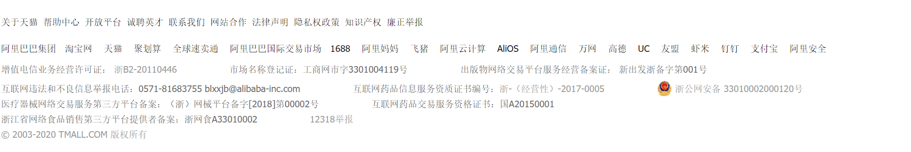

<!DOCTYPE html>
<html>
	<head>
		<meta charset="utf-8" />
		<meta name="viewport" content="width=device-width,initial-scale=1.0,
minimun-scale=1.0,maximum-scale=1.0,user-scalable=no">
		<title></title>
		<script src="../js/vue.js" type="text/javascript" charset="utf-8"></script>
		<!-- 用于background-image改变之后背景色能够自适应改变 -->
		<script src="../js/rgbaster.js"></script>
		<script>
			var img = document.getElementById('image');
			// 或者
			//var img = 'http://example.com/path-to-image.jpg'
			
			RGBaster.colors(img, {
			  success: function(payload) {
			    // payload.dominant是主色，RGB形式表示
			    // payload.secondary是次色，RGB形式表示
			    // payload.palette是调色板，含多个主要颜色，数组
			    console.log(payload.dominant);
			    console.log(payload.secondary);
			    console.log(payload.palette);
			  }
			});
		</script>
		<link rel="stylesheet" href="../css/Login.css" />
	</head>
	<body>
		<div id="app">
			<div class="loginpage">
				<div class="header">
					<a target="_blank" href="https://www.tmall.com/?spm=a2240.7829288.a2226n0.1.6a674fe5nwjxwI">
						
					</a>
				</div>
				<div ref="content_color" class="content">
					<div id="login-banner-wrap">
						<div class="inner">
							<a class="back-click-area" target="_blank" href="https://pages.tmall.com/wow/a/act/tmall/dailygroup/1235/wupr?spm=a2240.7829288.0.0.6a674fe5nwjxwI&pos=1&wh_pid=daily-195847&acm=lb-zebra-153802-761482.1003.2.7878537&scm=1003.2.lb-zebra-153802-761482.ITEM_1589014904543_7878537">							</a>
								
						</div>
					</div>
					<div class="login-box-form">
						<div class="login-inner-form">
							<div class="login-content-form">
								<iframe id="login-frame" src="/page/login-form.html"></iframe>
							</div>
						</div>
					</div>
				</div>
			</div>
			<div class="footer">
				
			</div>
		</div>
	</body>
	<script>
		new Vue({
			el: "#app",
			data: function(){
				return {
					image: "https://gw.alicdn.com/tfs/TB1iu9kaP39YK4jSZPcXXXrUFXa-1190-600.jpg"
				}
			},
			created: function(){
				var self = this;
				//self.$refs.content_color.style.backgroundColor = "#e10202";
				//	这里根据背景图像颜色计算出一个主色，但消耗性能很大
				RGBaster.colors(self.image,{
					paletteSize: 30,
					exclude: ['rgb(228, 236, 55)','rgb(255,255,255)','rgb(0,0,0)'],
					success: function(payload){
						//这里选择次色而非主色，主要是发现次色更接近原网页效果
						self.$refs.content_color.style.backgroundColor = payload.dominant;
					}
				})
			}
		});
	</script>
</html>
